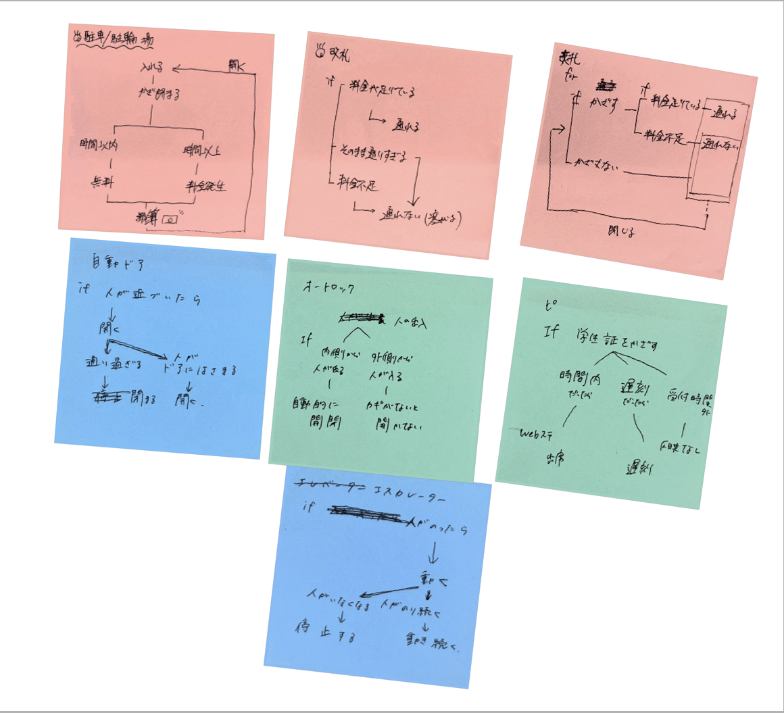

プログラムでモノを動かしているものについて、４人のグループになってpost itにまとめました。
グループ内で出された意見はこちらです。
ETC、改札、自動改札機、駐車場、駐輪場など…
上で挙げたものをプログラミング的思考で手順を説明してみました。

for文やif文を意識して考えるということが難しく、うまく表すことができませんでした。
プログラミング的思考のコツは、for文である「何から始まるのか（感知）」繰り返される基となるものに焦点を当ててから深く考えていくことというのを学びました。
プログラミングでどんなことができそうか、自分なりに考えてみました。
プログラミングを利用して、自動でお世話をしてくれる「植物観察」があったらいいなと思い、それについてプログラミング的思考でスケッチをしてみました。常にセンサーで観察しているのを程に書いてみました。